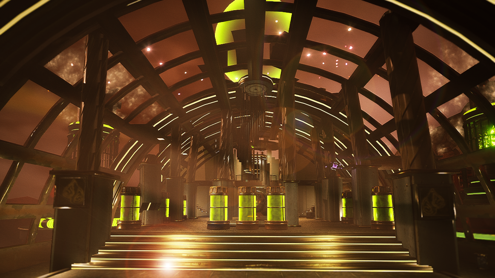
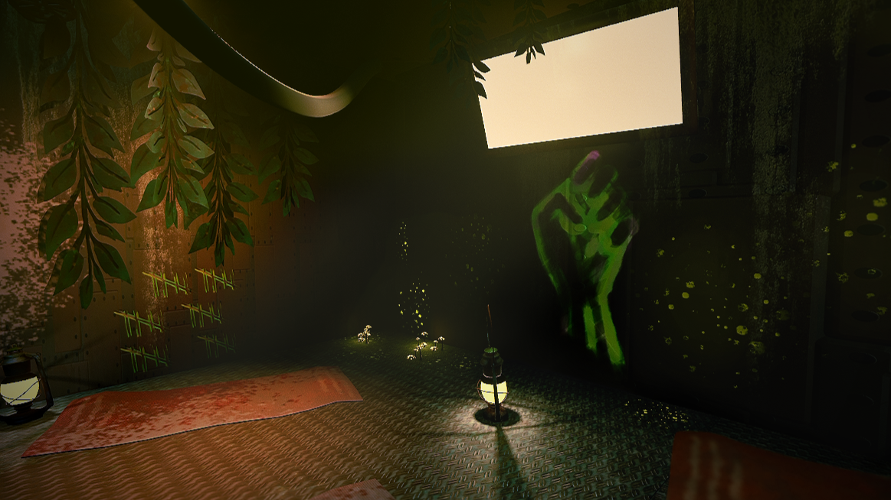
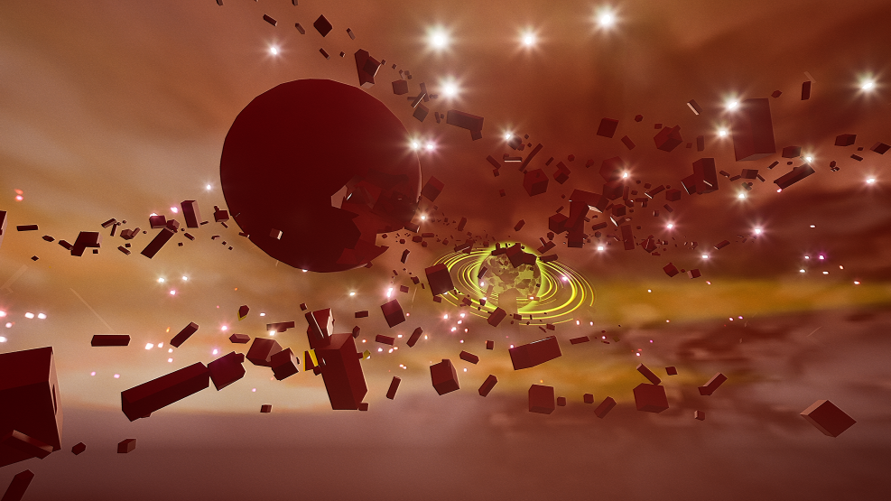
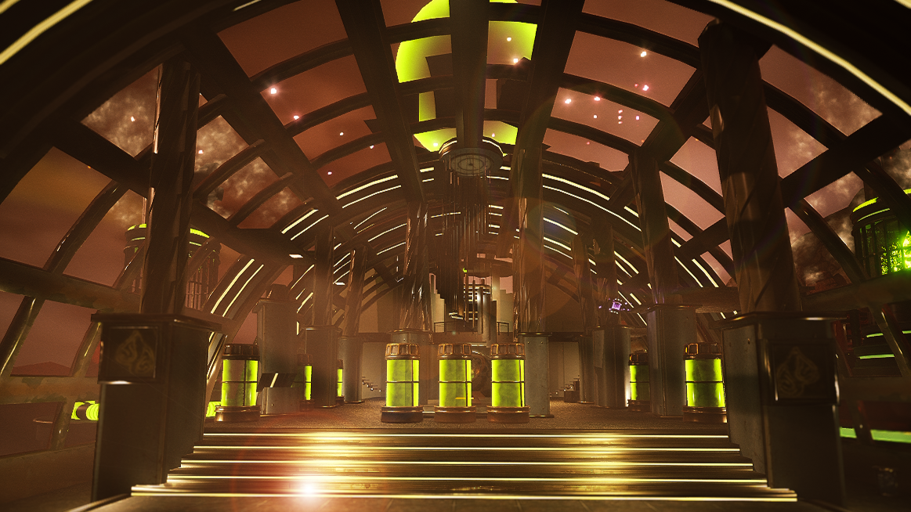
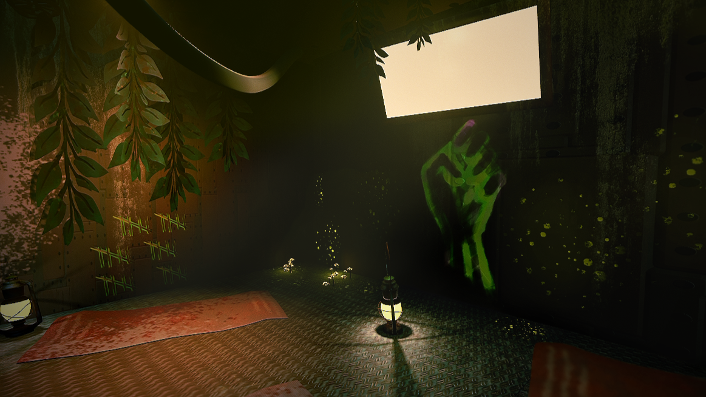
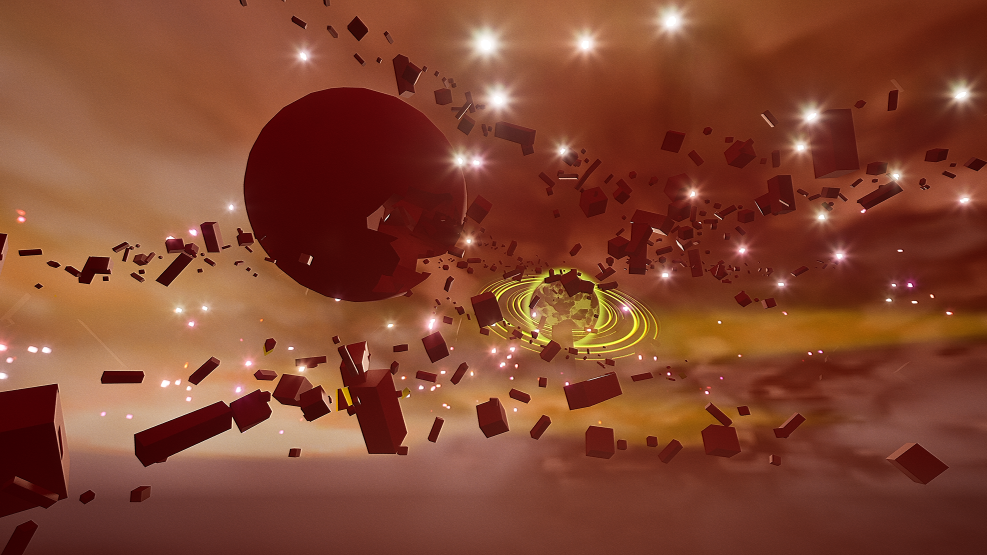

To give players a sense of control and power, I designed launched objects to have a
strong impulse force and temporary no-gravity for 'x' seconds. Upon impact, the
object's behavior was determined by its assigned enum in the actor component, allowing for
actions like sticking, destroying/exploding, bouncing, etc.
The third-person perspective presented challenges for aiming. I initially used a line trace from
the held object's location to where a secondary, extended crosshair line trace would hit.
Since this wasn't a direct line to the crosshair (like a camera's forward vector would provide),
accuracy often felt off.
Later in the project, working with a programmer, I designed and he implemented a solution using a
larger sphere trace to detect objects, rather than a thin line trace. While this improved accuracy,
I aim to refine this system further in the future. Control locks on targets and I prototyped this too, but I decided against this to keep
the theme of freedom for the player.

 




